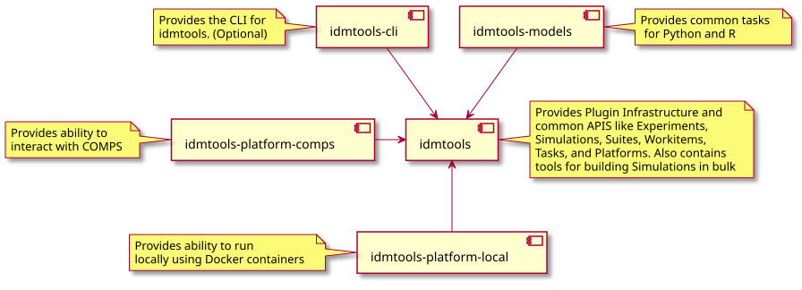
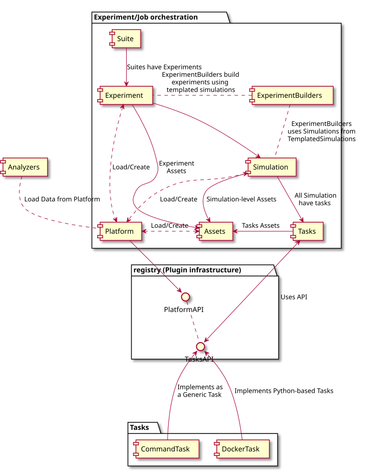
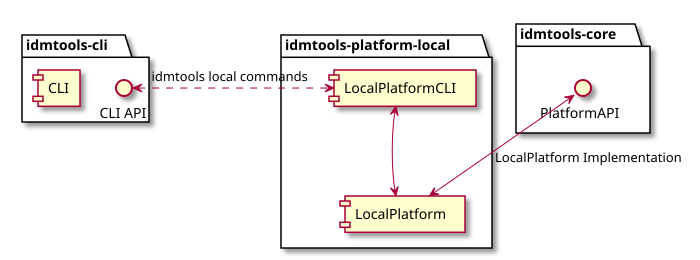
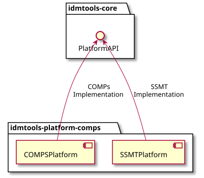
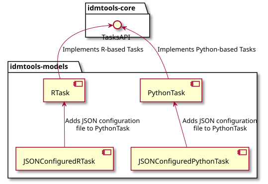

Architecture and packages reference¶
IDM-Tools is built in Python and includes an architecture designed for ease of use, flexibility, and extensibility. You can quickly get up and running and see the capabilities of IDM-Tools by using one of the many included example Python scripts demonstrating the functionality of the packages.
IDM-Tools is built in a modular fashion, as seen in the diagrams below. IDM-Tools design includes multiple packages and APIs, providing both the flexibility to only include the necessary packages for your modeling needs and the extensibility by using the APIs for any needed customization.
Packages overview¶

Packages and APIs¶
The following diagrams help illustrate the primary packages and associated APIs available for modeling and development with IDM-Tools:
Core and job orchestration¶

Local platform¶

COMPS platform¶

Note
To access and use COMPS you must receive approval and credentials from IDM. Send your request to support@idmod.org.
Models¶
